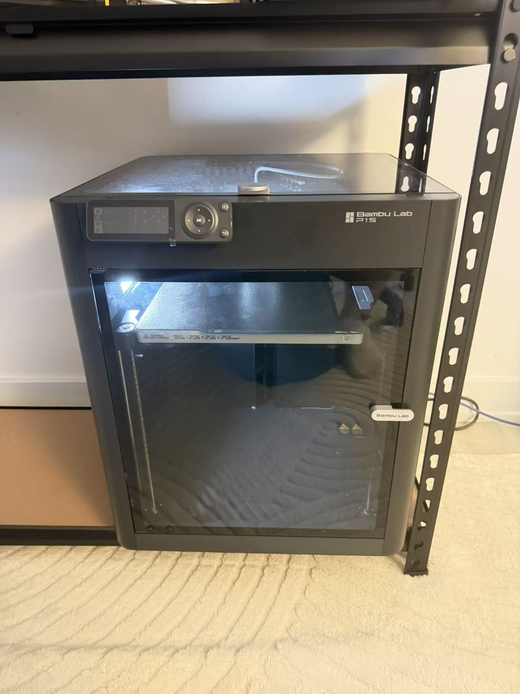

Bambu Lab P1S 3D Printer

One tool I use regularly is my Bambu Lab P1S 3D printer, mainly for making prototypes. It helps me turn a digital model into something I can hold, examine, and improve. I first learned about 3D printing in 2017 through online videos. My first printer was an i3-style machine that I built myself, following videos step by step to put together the frame, connect the wiring, and work through the code and setup. That experience introduced me to both using a tool and understanding how it works. Today, the P1S helps me focus on testing ideas in physical form. If I did not have a 3D printer, I would make prototypes by hand using foam board or clay. Those materials would still let me explore shapes, but I would build and adjust them directly by hand instead of revising a digital model and printing another version.